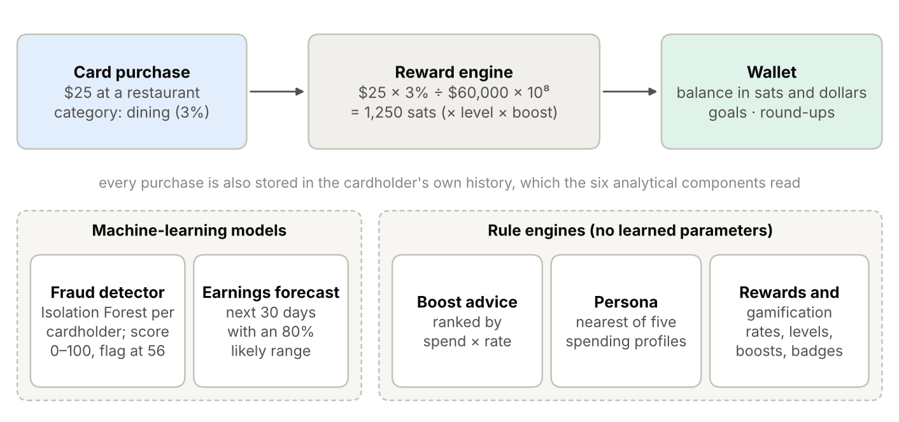
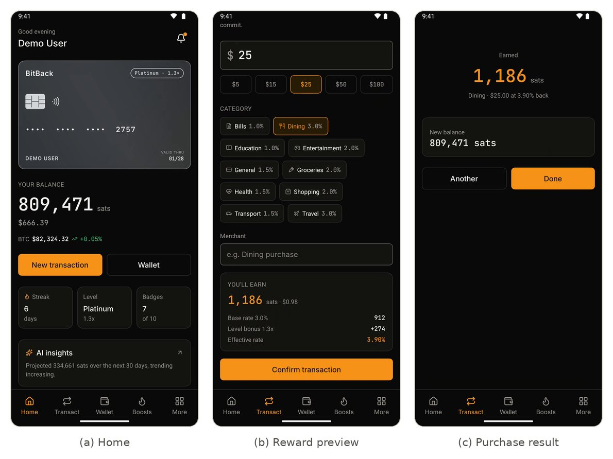
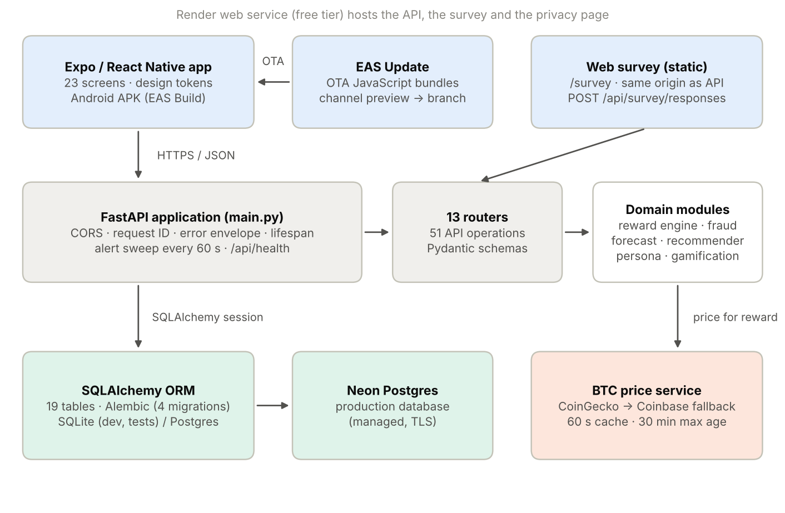
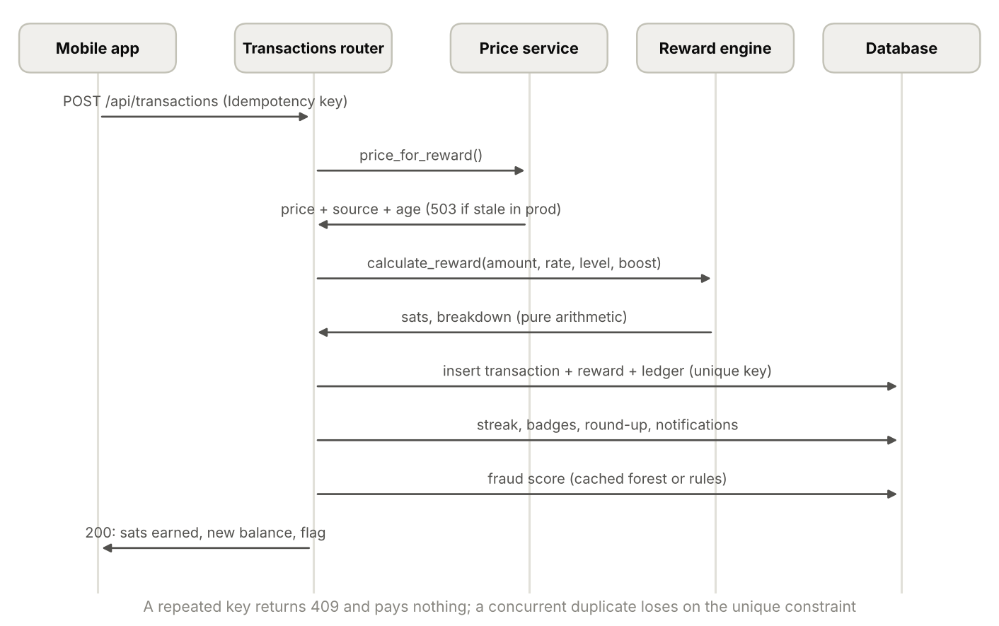
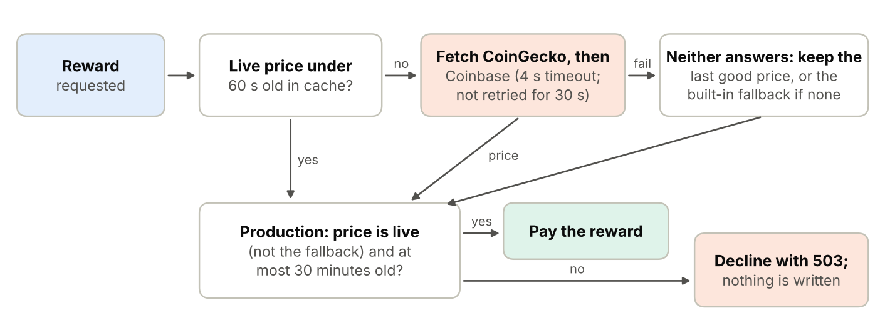
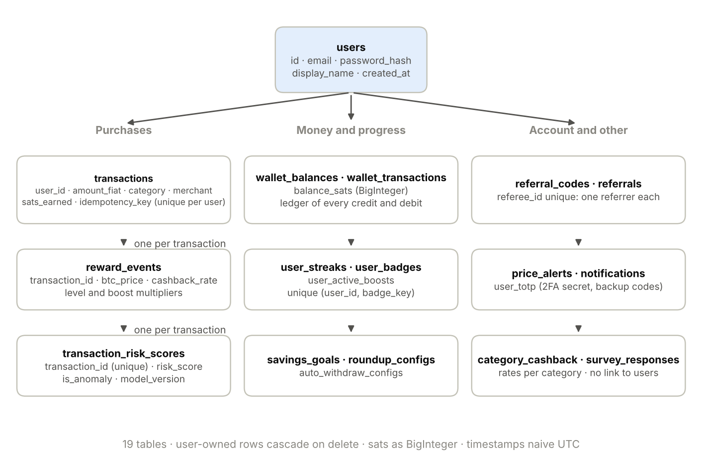
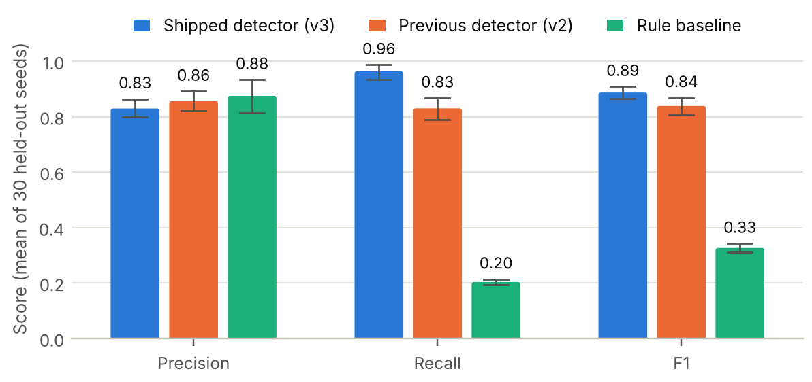
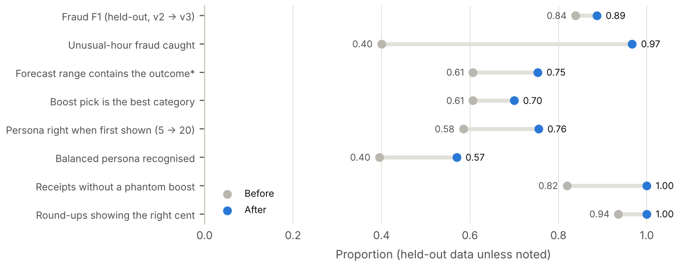
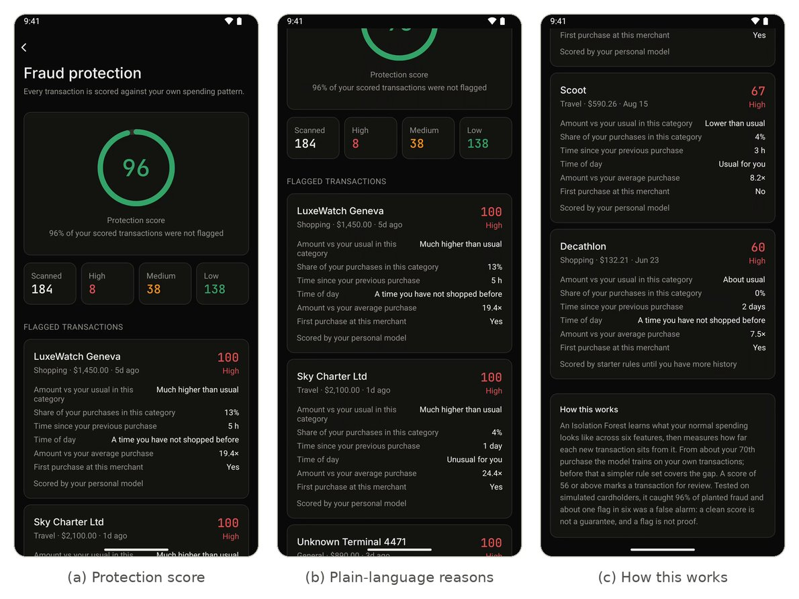

How it works
A purchase earns sats (1 bitcoin = 100,000,000 sats) at the bitcoin price at that moment, scaled by the cardholder's level and any active boost. Six components then read the cardholder's own history to protect, forecast and advise.


Architecture
An Expo (React Native) app talks to a FastAPI backend over HTTPS. The backend keeps 19 tables in Postgres, fetches the bitcoin price from CoinGecko with Coinbase as a fallback, and runs the analytical components in-process. The full write-up is in ARCHITECTURE.md.




Models and rule engines
Two components learn from data and four follow fixed rules. All six were evaluated on synthetic cardholders whose correct answers are known, against simple baselines, with changes chosen on validation data and confirmed on separate held-out data.
Fraud detection
An Isolation Forest per cardholder, with plain-language reasons for every flag.
F1 0.887 on 30 held-out seeds; beats the rule baseline on all 30.
Earnings forecast
Next 30 days of sats with an 80% likely range.
About 15% more accurate than "same as last month" for steady or rising spending.
Boost recommender
Ranks categories by what a 2× boost would actually earn.
Picks the best category 70% of the time, up from 61%.
Spending persona
Matches spending to five profiles, shown after 20 purchases.
75.5% right, with honest confidence.
Reward engine
Category rate × level × boost, in whole sats.
0 errors in 200,000 random purchases.
Gamification
Levels, ten badges and a daily streak.
Every badge reachable; difficulty measured by activity level.


Full method, results and limitations: EVALUATION.md.
Quality and security
The backend was hardened against its production database (31 findings, including two ways a purchase could pay twice), and the app was audited against WCAG 2.2, Nielsen's heuristics and OWASP MASVS, then tested over eight rounds on a device.

Try it
- Android: download the APK from the latest release.
- iPhone: install TestFlight, then open the BitBack invitation.
- Demo account: sign-in details are in the README; or create your own account.
- Live API: health check and interactive documentation. The free server sleeps when idle, so the first request can take up to a minute.
- Research survey: bitcoin-survey.onrender.com/survey
- Privacy policy: bitcoin-survey.onrender.com/privacy
Purchases and bitcoin are simulated: no real money or bitcoin is ever moved.